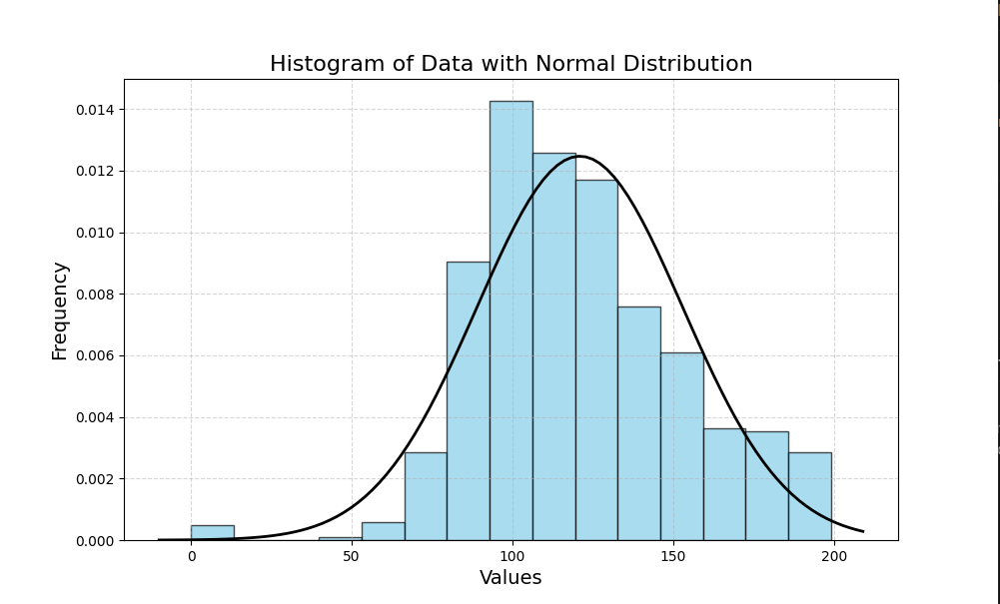
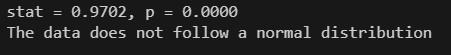

نظرة عامة على المشروع
مشروع إحصائي مبني بلغة Python يهدف إلى اختبار مدى اتباع البيانات للتوزيع الطبيعي باستخدام اختبار Shapiro-Wilk. يعتمد البرنامج على مكتبة pandas لتحميل البيانات، و scipy.stats لإجراء الاختبار الإحصائي، و matplotlib لعرض الرسوم البيانية التوضيحية. تم دعم المشروع بإمكانية تحميل بيانات من ملف خارجي (Excel أو CSV)، والتحقق من صحة العمود، واستخلاص استنتاج إحصائي حول شكل توزيع البيانات مع عرض رسم بياني يوضح التوزيع الطبيعي مقابل التوزيع الحقيقي.
المهام المنجزة: قراءة البيانات من ملفات Excel وCSV. التحقق من الأعمدة وتحليل القيم. تطبيق اختبار Shapiro-Wilk لاختبار التوزيع الطبيعي. عرض رسم بياني تفاعلي مع منحنى التوزيع الطبيعي. التعامل مع الأخطاء والتعامل مع حالات الأعمدة غير الموجودة.
التقنيات والأدوات المستخدمة
Python
Pandas
Matplotlib
scipy
Numpy
لقطات من المشروع


التحديات والحلول
أبرز التحديات:
- التعامل مع تنسيقات الملفات المختلفة مثل CSV وExcel.
- معالجة القيم المفقودة لضمان صحة الاختبارات الإحصائية.
- التحقق من وجود العمود المطلوب داخل البيانات.
- رسم التوزيع البياني بشكل واضح وسهل الفهم.
- تفسير نتائج اختبار Shapiro-Wilk بطريقة دقيقة للمستخدم.
الحلول المطبقة:
- استخدمت مكتبة
pandasمع تحديد محرك القراءة المناسب مثلopenpyxlلملفات Excel. - قمت بإزالة القيم المفقودة باستخدام
dropna(). - بنيت دالة تتحقق من وجود العمود المحدد وتعرض رسالة عند عدم وجوده.
- اعتمدت على مكتبة
matplotlibلرسم الهستوغرام ومنحنى التوزيع الطبيعي. - طبقت اختبار Shapiro-Wilk من مكتبة
scipyوشرحت نتيجة الـ p-value بشكل مبسط.
النتائج والتأثير
- تم التحقق من ان البيانات لا تتوزيع توزيع طبيعي مما ساعد في اختيار الأساليب الإحصائية المناسبة للتحليل.
- ساهم المشروع في تحسين جودة التحليل وتقليل الأخطاء الناتجة عن افتراضات غير صحيحة عن توزيع البيانات.
- وفر أداة سهلة الاستخدام للتحقق من التوزيع الطبيعي للبيانات، مما يسهل على الباحثين اتخاذ قرارات تحليلية مبنية على بيانات موثوقة.